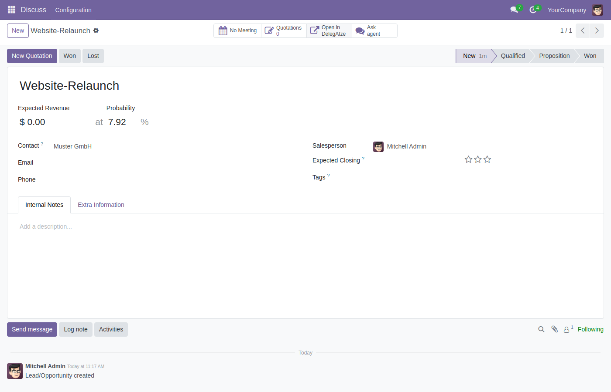
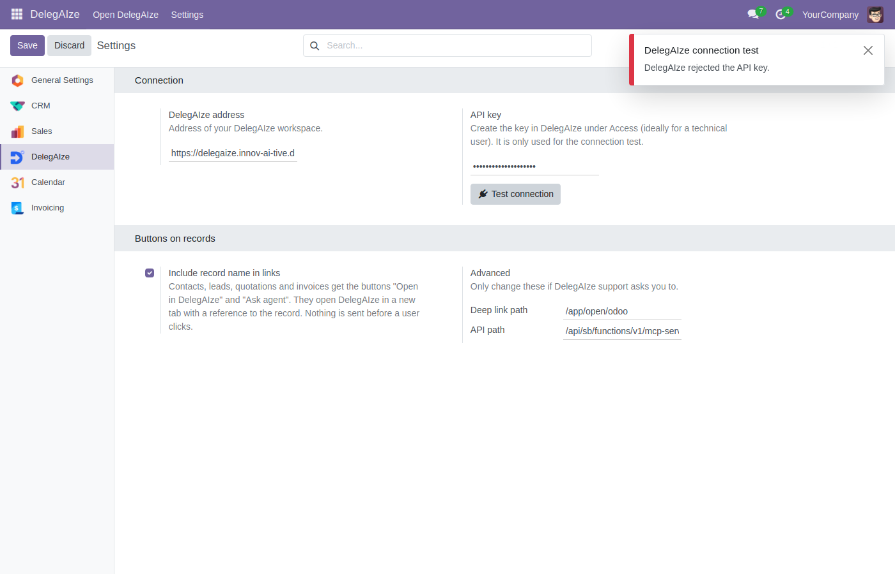

We set up three DelegAIze agents for your back office on top of your Odoo data — for example inbox triage, quotation follow-up and payment reminders — and connect them to your Odoo instance.
3 Agenten eingerichtet – 499 € einmalig
The module itself is free (LGPL-3) and works without the offer.
DelegAIze Connector bringt die Schaltflächen „In DelegAIze öffnen“ und „Agent fragen“ auf Kontakte, Leads, Angebote/Aufträge und Rechnungen sowie ein Menü „DelegAIze“ und eine Einstellungsseite mit Verbindungstest. Daten fließen nur, wenn jemand klickt – der Link enthält lediglich einen Verweis auf den Datensatz.
Angebot: 3 Agenten eingerichtet – 499 € einmalig.
Innov-AI-tive · Privacy policy / Datenschutz · Terms / AGB · Imprint / Impressum · Support: info@innov-ai-tive.de
License: LGPL-3. Source code: github.com/toasternet/odoo-delegaize-connector